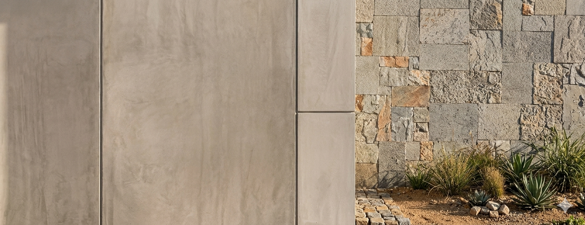

Exibindo 7 produtos
Mais de 1.700 cores Suvinil SelfColor
Encontre o tom perfeito para expressar a sua personalidade. O sistema SelfColor está disponível em todas as linhas premium do catálogo.
PRODUTOS
Catálogo Casas da Água

Descubra as linhas completas da Suvinil com proteção, rendimento e o acabamento impecável que o seu projeto exige. Extraído integralmente dos Boletins Técnicos Oficiais.
Encontre o tom perfeito para expressar a sua personalidade. O sistema SelfColor está disponível em todas as linhas premium do catálogo.